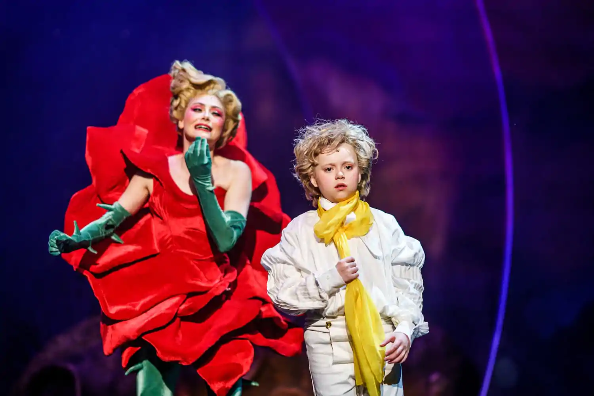
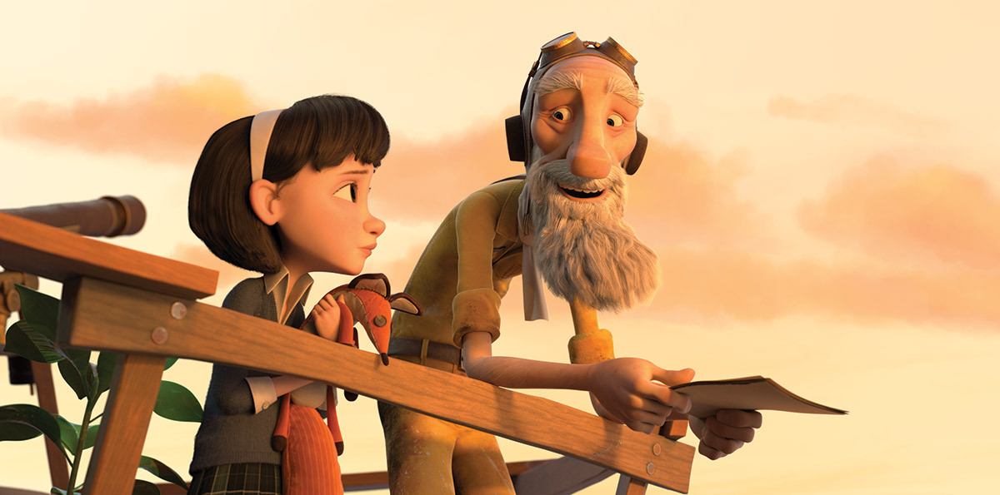
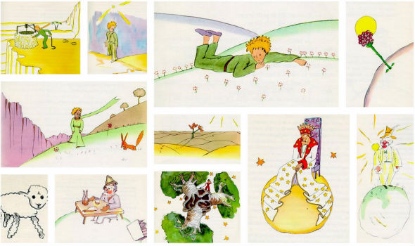
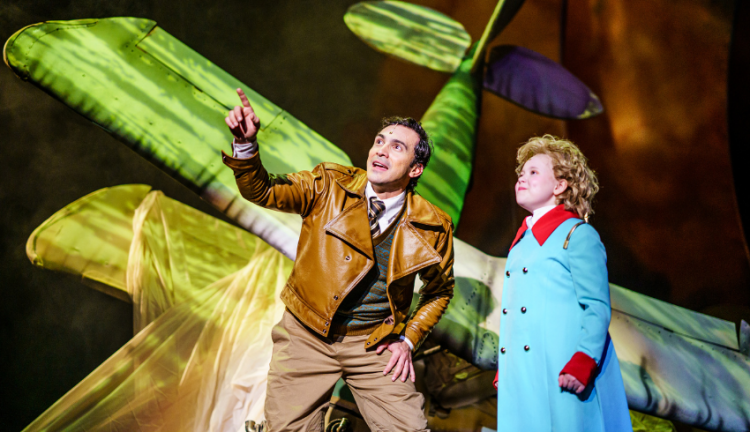

Filmes

O Pequeno Príncipefoi adaptado para o cinema diversas
vezes. A versão mais famosa é a de 1974, dirigida por Stanley Donen,
que trouxe um toque especial ao combinar a história com elementos
musicais, intensificando as emoções e a profundidade filosófica da
obra. Já em 2015, Mark Osborne dirigiu uma animação que modernizou o
conto, mesclando a história original com uma nova narrativa. Com uma
mistura de animação em CGI e stop-motion, essa adaptação atraiu
tanto o público jovem quanto adulto, mantendo a essência mágica e
poética do livro.
Peças de Teatro

O livro também foi adaptado para o teatro em inúmeras produções ao
redor do mundo, e cada uma delas traz sua própria interpretação da
obra de Saint-Exupéry. Essas adaptações teatrais variam desde peças
mais tradicionais, que seguem fielmente o enredo original, até
encenações modernas que oferecem novas leituras da história, algumas
vezes abordando temas contemporâneos ou explorando técnicas teatrais
inovadoras. As produções podem ser voltadas tanto para crianças
quanto para adultos, e muitas delas conseguem transmitir a
profundidade filosófica do livro de forma acessível a públicos de
todas as idades.
Óperas e Balés

O Pequeno Príncipe também serviu de inspiração para
diversas óperas e balés, que reinterpretam a história de maneira
única através da música e da dança. As adaptações operísticas
frequentemente enfatizam os elementos líricos e emocionais da obra,
utilizando a música para aprofundar a conexão com os temas
universais do livro, como a amizade, o amor e a solidão. A
combinação de libretos poéticos e partituras emocionantes permite
que a complexidade emocional da história seja explorada de forma
intensa e envolvente.
Adaptações para TV

O livro também também foi adaptado para a televisão em diversas
formas, incluindo animações e séries de TV. Essas adaptações tentam
capturar a magia e a essência da obra de Antoine de Saint-Exupéry,
transformando a história em episódios que encantam tanto crianças
quanto adultos. As animações frequentemente trazem um estilo visual
vibrante e criativo, que busca refletir a poesia e a imaginação do
livro, enquanto as séries de TV podem explorar a narrativa com mais
profundidade, desenvolvendo tramas e personagens ao longo de vários
episódios.
Adaptações de Quadrinhos e Ilustrações

Além de filmes e peças, O Pequeno Príncipe foi adaptado
para o formato de quadrinhos e recebeu várias edições ilustradas ao
longo dos anos. Essas versões gráficas oferecem uma nova forma de
experimentar a história, apresentando-a através da arte visual em
vez das palavras. As adaptações em quadrinhos frequentemente
reinterpretam os personagens e cenários do livro, trazendo uma nova
perspectiva através do estilo artístico dos ilustradores.
Musicais e Músicas

O livro inspirou uma variedade de composições musicais e até mesmo
musicais teatrais, refletindo a profundidade e a beleza da obra de
Antoine de Saint-Exupéry. As canções baseadas no livro exploram os
temas centrais e os personagens da história, proporcionando uma nova
forma de vivenciar a narrativa através da música. Essas composições
musicais frequentemente capturam a essência poética e emocional do
livro, abordando temas como a amizade, a perda e o sentido da vida
de maneira que ressoa profundamente com os ouvintes.